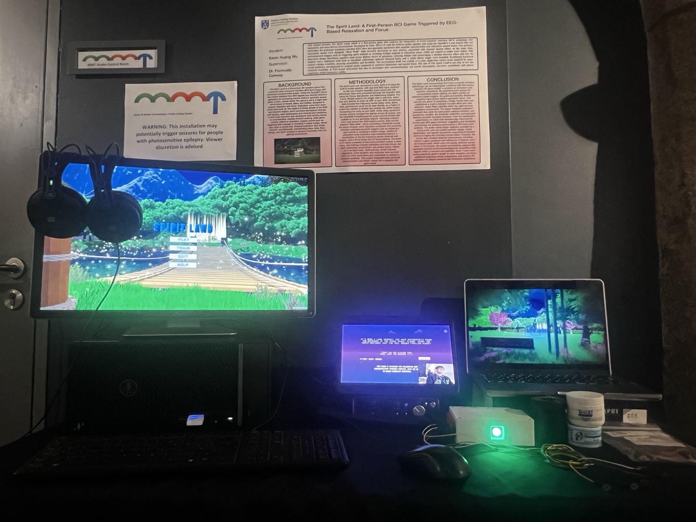
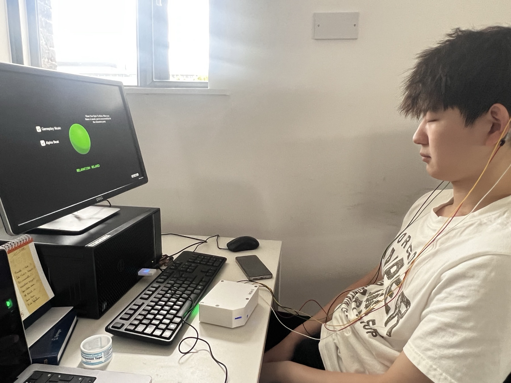
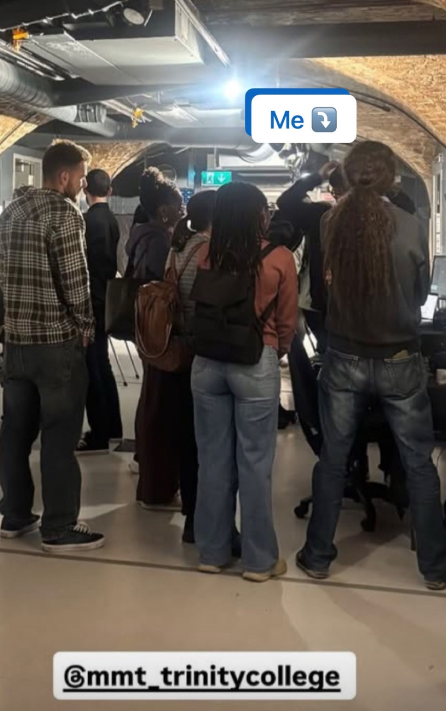

Role
Unity Developer · BCI Interaction Designer · HCI Researcher
( project 02 )
EEG-Controlled First-Person Interactive Experience
The Spirit Land is a first-person BCI game triggered by EEG-based relaxation and focus. Built in Unity with OpenBCI, it maps Beta activity to forward walking and Alpha relaxation to environmental events, turning physiological data into an explorable and meditative interaction loop.
Project Trailer
Role
Unity Developer · BCI Interaction Designer · HCI Researcher
System Focus
Dual-wave EEG control, real-time data routing, calibration scenes and immersive first-person interaction.
Evidence
A four-participant pilot evaluation, iterative usability testing and a complete installation-ready showcase setup.
( premise )
The project began with one core idea: instead of treating BCI control as a single abstract mental-state input, different brain states should do different jobs. In The Spirit Land, Beta activity supports locomotion, while Alpha-based relaxation unlocks environmental responses such as bridge reveals, spirit interactions and other world changes.
That separation let the system alternate between active control and calm attention, which made the interaction easier to read and more meaningful than a one-signal prototype. The first-person format was chosen to deepen immersion in the present build while also leaving room for future VR adaptation.
Signal Path
World Regions
Spirit Lake, Flower Sea and Dynamic Forest were used as themed spaces for movement, atmosphere and BCI-triggered discovery.
( interaction model )
Beta Locomotion
Real-time Beta band power was routed into Unity and compared against an adjustable threshold so walking could be triggered through focused mental effort rather than a standard controller alone.
Alpha Relaxation Events
Relaxation state was used to unlock environmental responses, including puzzle-like reveals and magical feedback moments that made the world feel reactive rather than decorative.
Hybrid Control
Keyboard fallback stayed available throughout the experience so player agency was never blocked by unstable signal moments or participant fatigue.
( training & support )
To make the system more playable, I built separate training scenes for relaxation and focus. The relaxation scene used strong visual feedback plus an audio confirmation so participants could close their eyes and still know when the threshold had been reached. The focus scene showed a direct walking state response and supported threshold tuning.
Support tools were then layered in around those scenes: optional 20 Hz flicker for Beta activation, Alpha and Beta binaural support, gameplay music, a threshold dropdown and live brainwave readouts. Together, these features turned calibration into a guided interaction rather than a hidden technical step.
Player Support Tools
Why It Matters
The project was not only about making EEG work technically, but about giving players enough guidance to stay calm, understand the system and keep moving through the experience.
( evaluation )
The project was evaluated through a four-participant pilot study combining survey feedback and qualitative observation.
Participants
4
All participants were new to BCI interaction, making the test especially useful for readability and first-time usability.
Environment Response
100%
Every participant described the world as peaceful, calming or relaxing, confirming that the visual and audio atmosphere was doing real work.
Support Tool Value
75%
Most participants found the binaural support useful for relaxation or concentration, and the 20 Hz flicker was also widely reported as helpful.
Control Preference
50 / 50
Half preferred Beta walking while half preferred keyboard movement, which validated the decision to keep hybrid fallback inside the final build.
( playthrough )
The trailer gives the fast overview, while the full playthrough shows the pacing, calibration flow and how the world responds during longer interaction.
This longer recording makes it easier to understand the cadence of the experience: walking, pause, reset, attention shift and environmental reward. It also shows how the project functions beyond a single hero shot.
( showcase )

The final setup combined the main display, support monitor, BCI hardware and printed research framing so the project could be experienced both as a game and as a public-facing research installation.

This test condition was important because Alpha-state interaction only works if the player can relax without needing to keep reading the screen. That is why the build included clear audio confirmation.

Beyond the playable build, the project also needed to communicate itself clearly in person. Presenting it live helped demonstrate both the technical pipeline and the HCI reasoning behind the design decisions.